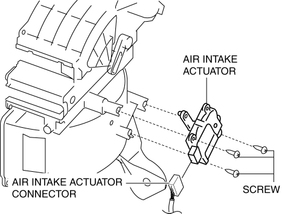

< Previous
Next >
2014 -
Mazda6 -
HVAC
AIR INTAKE ACTUATOR REMOVAL/INSTALLATION [FULL-AUTO AIR CONDITIONER]
1. Disconnect the negative battery cable. (See NEGATIVE BATTERY CABLE DISCONNECTION/CONNECTION [SKYACTIV-G 2.5].)
2. Remove the following parts: a. Glove compartment (See GLOVE COMPARTMENT REMOVAL/INSTALLATION.)
b. Dashboard under cover (See DASHBOARD UNDER COVER REMOVAL/INSTALLATION.)
c. Front scuff plate (passenger-side) (See FRONT SCUFF PLATE REMOVAL/INSTALLATION.)
d. Front side trim (passenger-side) (See FRONT SIDE TRIM REMOVAL/INSTALLATION.)
e. Audio amplifier (with Bose®) (See AUDIO AMPLIFIER REMOVAL/INSTALLATION.)
3. Disconnect the air intake actuator connector.

4. Remove the screw, then remove the air intake actuator.
5. Install in the reverse order of removal.
< Previous
Next >
© 2012 Mazda North American Operations, U.S.A.